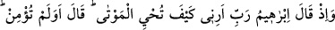
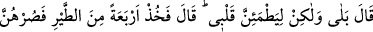
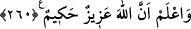

Biz su içtik, bir damla da yere döktük çünkü,
Şerefli kimselerin bardağından yerin de bir nasibi vardır.
demiştir. et-Te’vilâtü’n-Necmiyye’de böyle yazılıdır.
260. İbrâhîm Rabbine: Ey Rabbim! Ölüyü nasıl dirilttiğini bana göster, demişti.
Rabbi ona: Yoksa inanmadın mı? dedi. İbrâhîm: Hayır! İnandım, fakat kalbimin
mutmain olması için (görmek istedim), dedi. Bunun üzerine Allah: Öyleyse dört
tane kuş yakala, onları yanına al, sonra (kesip parçala), her dağın başına onlardan
bir parça koy. Sonra da onları kendine çağır; koşarak sana gelirler. Bil ki Allah
azîzdir, hakîmdir, buyurdu.
“Şu zamanı hatırla” dendiği zaman, o zamanda meydana gelen olayı zikretmek gerekir.
“Rabb”, duâ etmeye başlarken afv ve merhamet istendiğini belirten ve duâya derhal
icâbet gerektiren bir kelimedir.
“Ölüleri nasıl dirilttiğini bana göster”. Sen dirilt ben de bakayım. Bu şekilde
ölüleri diriltme keyfiyetinin nasıl olduğunu göreyim. İbrâhîm (a.s.) bu soruyu, bildiği bir
şeyi görerek tahkik etmek için sormuştu. Allah Teâlâ da onu, ilme’l-yakîn seviyesinden
ayne’l-yakîne, oradan da makamların en yücesi olan Hakka’l-yakîne kavuşturmuştur. Bu
üç çeşit yakîn arasındaki fark şudur:
İlme’l-yakin haber alma yoluyla elde edilir. Ayne’l-yakin, bir şey hakkında görerek
bilgi edinmektir. Bu bilgide şek ve şüpheye yer yoktur. Nitekim Allah Teâlâ kafirler
hakkında: “Sonra âhırette onu çıplak gözle göreceksiniz” (et-Tekâsür, 102/7)
buyurmaktadır.
Kâfirler cehenneme girip onun can yakıcı azabını tatmaya başladıkları zaman ise
Allah Teâlâ onlara: “İşte yalanlayıcıya kaynar sudan bir ziyâfet vardır. Ve onun sonu
cehenneme atılmaktır. Şüphesiz ki bu kesin bir gerçektir” (el-Vâkıa, 56/93)
buyuracaktır.
Allah Teâlâ, İbrâhîm (a.s.)’a: “Benim ölüleri diriltip bütün terkibleriyle eski hallerine
döndürmeye kadir olduğumu yakinen bilip inanmadın mı?” dedi. Allah Teâlâ, İbrâhîm
(a.s.)ın insanlar içerisinde îmânın ne demek olduğunu en iyi bilen ve inanan biri
olduğunu biliyordu. Fakat, ona “Hayır! İnandım” dedirtmek suretiyle, imanını bütün
dinleyenlere açıklamak ve “Ya Rabb! Ölüleri nasıl dirilttiğini bana göster!” sözüyle